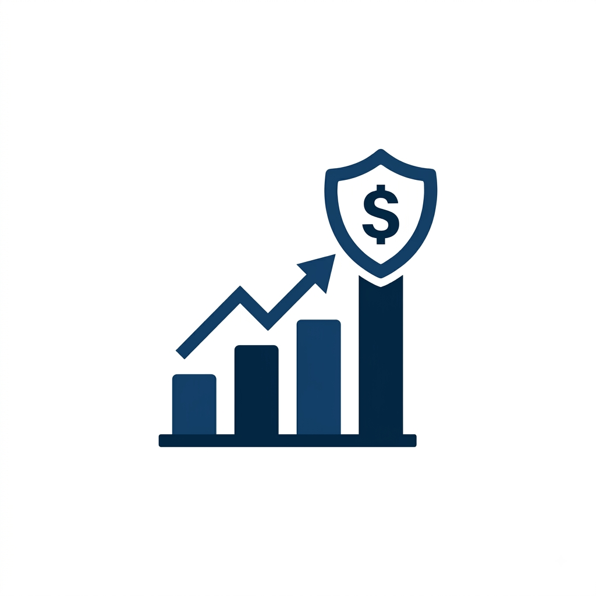

1. Regra 50/30/20 para Orçamento
Por: Gabrielly Kepel
Uma forma simples de organizar o salário: 50% para necessidades básicas, 30% para desejos pessoais e 20% para prioridades financeiras (poupança e investimentos).
Fonte: Guia de Finanças
Aprenda a cuidar do seu dinheiro e a construir o seu futuro financeiro!
Por: Gabrielly Kepel
Uma forma simples de organizar o salário: 50% para necessidades básicas, 30% para desejos pessoais e 20% para prioridades financeiras (poupança e investimentos).
Fonte: Guia de Finanças

Por: Gabrielly Kepel
É um valor guardado para imprevistos (como despesas médicas ou perda de emprego). O ideal é ter acumulado entre 3 a 6 meses do seu custo de vida básico.
Fonte: Educação Financeira

Por: Gabrielly Kepel
Albert Einstein dizia que os juros compostos são a maior força do universo. Investir com foco no longo prazo faz o seu dinheiro trabalhar diretamente para você.
Fonte: Economia Básica
Por: Gabrielly Kepel
Liste todas as dívidas, negocie os juros mais altos primeiro (como o cartão de crédito) e estabeleça um limite rígido de gastos até quitar os débitos pendentes.
Fonte: Portal do Consumidor

Por: Gabrielly Kepel
Tesouro Direto, CDBs e LCIs são ótimas alternativas para quem quer rentabilidade superior à da poupança com baixo risco e garantia de resgate fácil.
Fonte: Mercado Financeiro
Por: Gabrielly Kepel
Viu algo que quer muito comprar? Espere 30 dias. Se após esse período o desejo continuar forte e couber no seu orçamento, realize a compra consciente.
Fonte: Psicologia Financeira